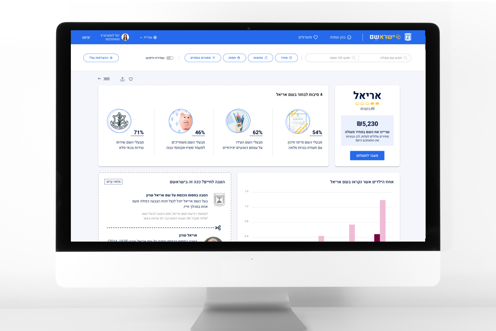
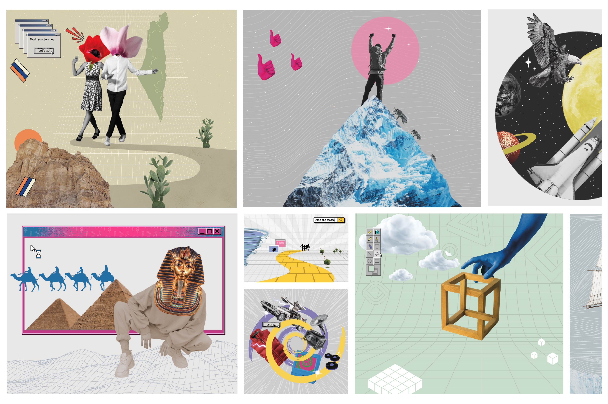
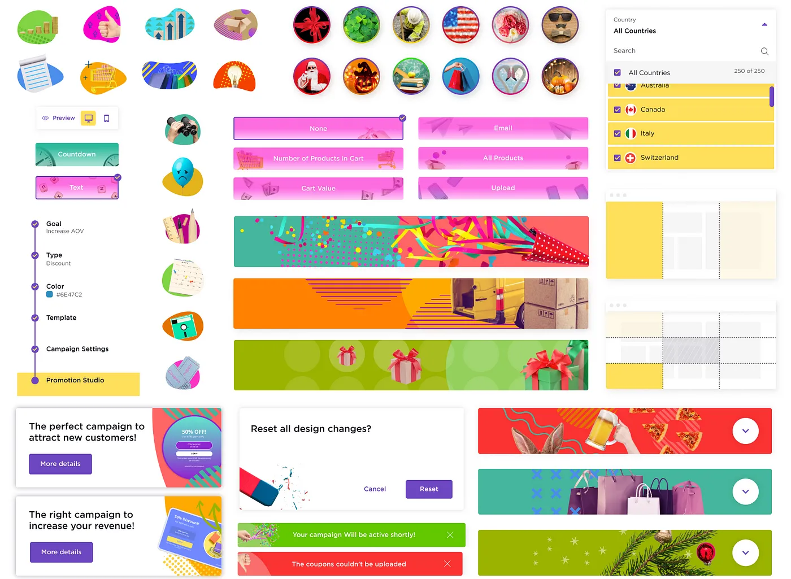
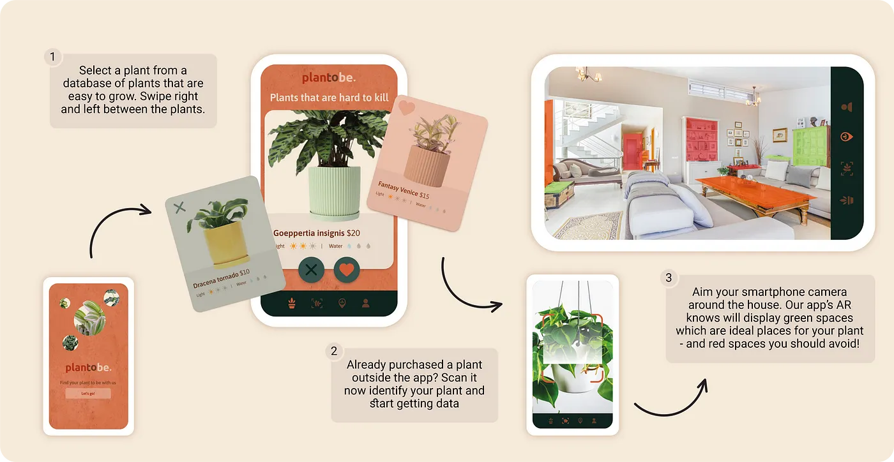
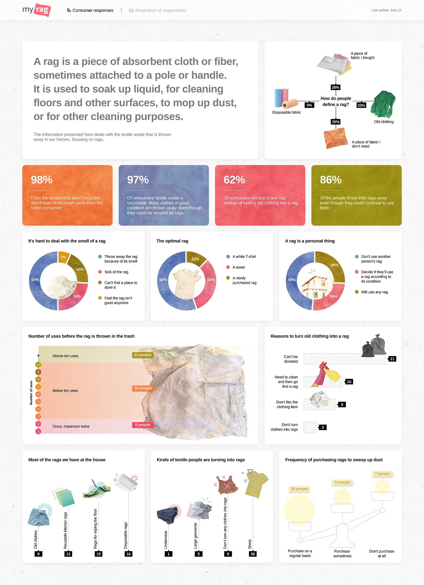
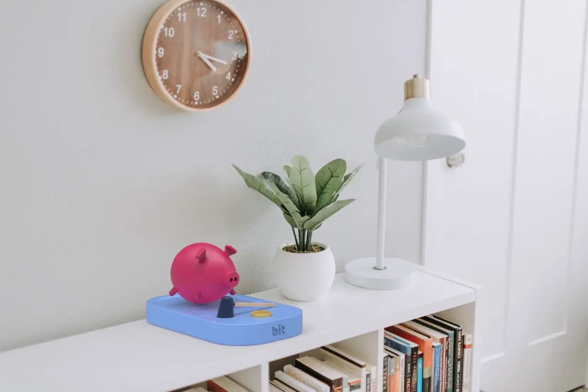
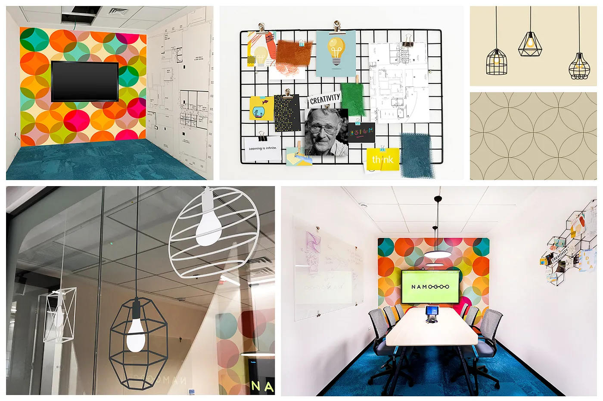

How Much Is Your Name Worth? Discover in the Israshem Platform
5 min readThe project presents a speculative name pricing scenario. In 2026, the state will publish the Israshem initiative.
Read Blog
The project presents a speculative name pricing scenario. In 2026, the state will publish the Israshem initiative.
Read Blog
I designed Namogoo’s new meeting rooms around the concept of journeys, turning each space into a unique story-inspired environment.
Read Blog
Designing a product that offers individualized promotions to site visitors based on real-time buying intent.
Read Blog
A project where I created and designed an app for people who are not really good in taking care their plants.
Read Blog
I designed a dashboard with data on the textile waste that is thrown away by home consumers, especially rags.
Read Blog
The process of designing a physical object that is connected to an app that allows the user to perform an action.
Read Blog
I was very excited to take part in designing the meeting rooms in Namogoo’s new office space! Here’s a behind-the-scenes tour of the rooms!
Read Blog